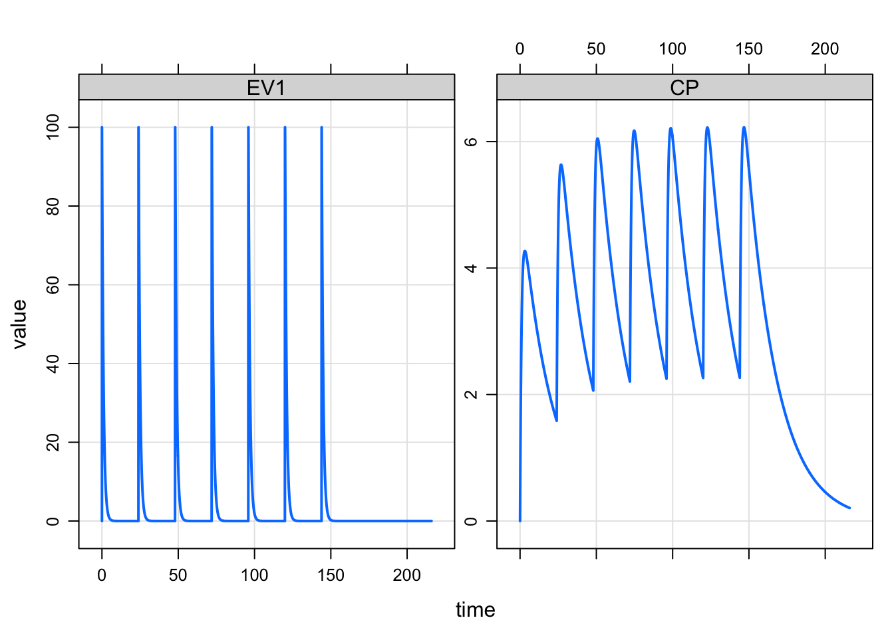
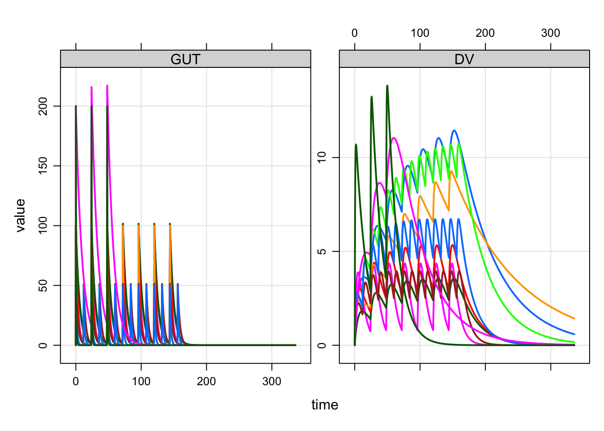

Work with event objects
library(mrgsolve)
library(dplyr)Event objects are simple ways to implement PK dosing events into your model simulation.
Let’s illustrate event objects with a one-compartment, PK model. We read this model from the mrgsolve internal model library.
mod <- mread("pk1cmt", modlib(), end=216, delta=0.1)1 Events
Events are constructed with the ev function
e <- ev(amt=100, ii=24, addl=6)This will implement 100 unit doses every 24 hours for a total of 7 doses. e has class ev, but really it is just a data frame
e. Events:
. time cmt amt evid ii addl
. 1 0 1 100 1 24 6as.data.frame(e). time cmt amt evid ii addl
. 1 0 1 100 1 24 6We can implement this series of doses by passing e in as the events argument to mrgsim
mod %>% mrgsim(events=e) %>% plot(EV1+CP~time)
The events can also be implemented with the ev constructor along the simulation pipeline
mod %>%
ev(amt=100, ii=24, addl=6) %>%
mrgsim %>%
plot(CP~time)
2 Event expectations
amtis requiredevid=0is forbidden- Default
timeis 0 - Default
evidis 1 - Default
cmtis 1
Also by default, rate, ss and ii are 0.
3 Combine events
mrgsolve has operators defined that allow you to combine events. Let’s first define some event objects.
e1 <- ev(amt=500)
e2 <- ev(amt=250, ii=24, addl=4)
e3 <- ev(amt=500, ii=24, addl=0)
e4 <- ev(amt=250, ii=24, addl=4, time=24)We can combine e1 and e3 with a collection operator
c(e1,e4). Events:
. time cmt amt evid ii addl
. 1 0 1 500 1 0 0
. 2 24 1 250 1 24 4mrgsolve also defines a %then$ operator that lets you execute one event and %then% a second event
e3 %then% e2. Events:
. time cmt amt evid ii addl
. 1 0 1 500 1 24 0
. 2 24 1 250 1 24 4Notice that e3 has both ii and addl defined. This is required for mrgsolve to know when to start e2.
3.1 Combine to create a data set
We can take several event objects and combine them into a single simulation data frame with the as_data_set function.
e1 <- ev(amt=100, ii=24, addl=6, ID=1:5)
e2 <- ev(amt=50, ii=12, addl=13, ID=1:3)
e3 <- ev(amt=200, ii=24, addl=2, ID=1:2)When combined into a data set, we get * N=5 IDs receiving 100 mg Q24h x7 * N=3 IDs receiving 50 mg Q12h x 14 * N=2 IDs receiving 200 mg Q48h x 3
data <- as_data_set(e1,e2,e3)
data. ID time cmt evid amt ii addl
. 1 1 0 1 1 100 24 6
. 2 2 0 1 1 100 24 6
. 3 3 0 1 1 100 24 6
. 4 4 0 1 1 100 24 6
. 5 5 0 1 1 100 24 6
. 6 6 0 1 1 50 12 13
. 7 7 0 1 1 50 12 13
. 8 8 0 1 1 50 12 13
. 9 9 0 1 1 200 24 2
. 10 10 0 1 1 200 24 2To simulate from this data set, we use the data_set function. First, let’s load a population PK model
mod <- mread("popex", modlib())mod %>% data_set(data) %>% mrgsim(end=336) %>% plot(GUT+DV ~ .)